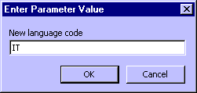

Under the name MultiLanguage StageRace provides a system to influence the languages in which publications are generated.
In the Required languages section of the publication settings dialog you can select the languages that you want to use on your publications.
Left you can enter the name of a language that you require. It will be appended to the list of required languages when you click the Add button.
Languages can be removed from the list of required languages by selecting them and clicking the Remove button; one by one.
Note that StageRace will allow you to enter languages that do not actually exist yet in the database on your computer.
Every language plus its associated text strings is stored in a Microsoft® database file, named MultiLanguage.mdb. The file resides in the same folder as StageRace.exe.
This database can be modified using Microsoft® Access.
The database has two components:
The table Translations consists of text in all available languages. For every text (record) there are:
The Identifier and Language fields have to be entirely correct. For instance, these fields are case-sensitive.
The query Add new language allows to add an entire new language at once. On executing the query you will be asked for a New language code. As a result of the query all existing texts in the database are copied for the new language (code).

Naturally, these texts remain to be translated in the Translations table.
Note that by convention the names of the available languages are based on the name of a language in the language itself. This results in language codes ES, DE and NL (rather than SP, GE and DU).
The following languages are standardly available in StageRace:
Feel free to submit to us any new languages that you add, so we can make them available to other users.
You can choose missing strings to be replaced by a question mark in publications. That way you can easily discover which strings you still need to add to a language.